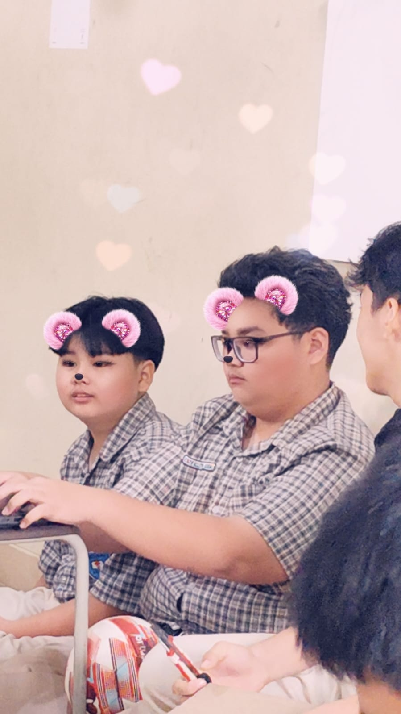

Halo, Saya Kenzie
Siswa X TKJ 1 - SMK Kristen Immanuel Pontianak
Saya adalah siswa kelas X TKJ 1 di SMK Kristen Immanuel Pontianak. Sebelumnya, saya menempuh pendidikan di SMP Immanuel Pontianak. Saya tertarik dengan dunia teknologi, terutama jaringan komputer dan pemrograman web. Saya juga suka mencoba hal-hal baru, khususnya yang berhubungan dengan komputer dan coding. Di luar sekolah, saya memiliki hobi bermain game dan basket. Kedua hobi tersebut menjadi kegiatan yang saya sukai untuk mengisi waktu luang. Ke depannya, saya ingin mengembangkan kemampuan di bidang IT, khususnya jaringan komputer dan web development. Website ini saya buat sebagai tempat untuk memperkenalkan diri, menampilkan hasil karya, serta menyimpan berbagai proyek yang saya kerjakan selama belajar di jurusan TKJ.
Cita-cita saya adalah menjadi seorang teknisi jaringan dan pengembang web yang handal. Website ini merupakan portofolio pribadi saya yang akan terus diperbarui seiring berjalannya pembelajaran.